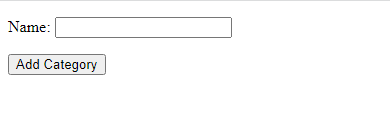

Django Form:
Forms are used to take input from user in web application. As compare to HTML forms, Django forms are a bit different. HTML forms are enclosed within <form> and </form>. In between these
tags we define different input tag that are used to take different type of inputs from user like below.
<h4>Category Form</h4>
<div>
<form action="">
<input type="text" id="category_name" name="category_name" value="Electronics">
</form>
</div>
In strucutre, django forms are quite much similar to the django model where we define different
types of fields and then those fields will be rendered in django template.
To define django form we need to create a class, and it is needed to be inherited from base
Form class. The Form class is present in Django's form module. First create a new file named forms.py in todo/todo_app directory. To define your own form have a look at following code snippet.
todo_app/forms.py
from django import forms
class CategoryAddForm(forms.Form):
# Form fields are defined here.import forms
Fields
Form fields that are initiated in form classes are much like django model fields. Some of which are explained below:
- CharField: It will define a field that can take text input from user.
- DateTime: It will define a field that takes datetime input like we saw in django admin user interface.
- EmailField: This will allow us to take email input.
These input fields will have pre-applied validations i.e. The above email field
EmailField will only accept a valid email input and the validations will be applied on
HTML level by Django.Rendering Form
Django form CategoryAddForm must be initiated in the view.py that will then pass the form instance to template. An example is shown below. Let's say we have defined the above form CategoryAddForm
inside a forms.py inside todo_app directory. Then in todo_app/views.py:
todo_app/forms.py
from .forms import CategoryAddForm
def addCategory:
form = CategoryAddForm()
context = {'form': form}
return render(request, 'todo_app/add_category.html', context)
Rendering Form in Template
In template we don't have to add much work. First need to create an HTML file named add_category.html in templates directory then we can simply render form using below code:
todo_app/add_category.py
<form action="" method="post">
{% csrf_token %}
{{ form.as_p }}
<input type="submit" value="Add Category">
</form>
The above template will render the form sent to the template in context. Lets create a URLconf for Add Category form that maps the view to a route path. Open
todo_app/urls.py and append following line of code inside urlpatterns list:
todo_app/urls.py
path('add-category', views.addCategory, name='addCategory'),
You can check on browser at http://127.0.0.1:8000/todo_app/add-category/
Browser: Category Item List (http://127.0.0.1:8000/todo_app/add-category/)

There are several other ways to render forms in template which are shown below try them out on your own:
- {{ form.as_table }} will render them as table cells wrapped in <tr> tags
- {{ form.as_p }} will render them wrapped in <p> tags
- {{ form.as_ul }} will render them wrapped in <li> tags
Posting a Form to a View
Once you hit the submit button inside a form, the form will be submitted to the URL route specified in action attribute of form. The corresponding view may look like this:
todo_app/forms.py
def postAddCategory(request):
form = CategoryAddForm(request.POST)
category = form.save(commit=False)
category.save()
return redirect('index')
Lets create a URLconf for Post Category form that maps the view to a route path. Open
todo_app/urls.py and append following line of code inside urlpatterns list:
todo_app/urls.py
path('post-category', views.postAddCategory, name='postAddCategory'),
The above code will create a new Category with name input in the Form field. E.g., if form submitted with input Drinks then a new category named Drinks added in Database.